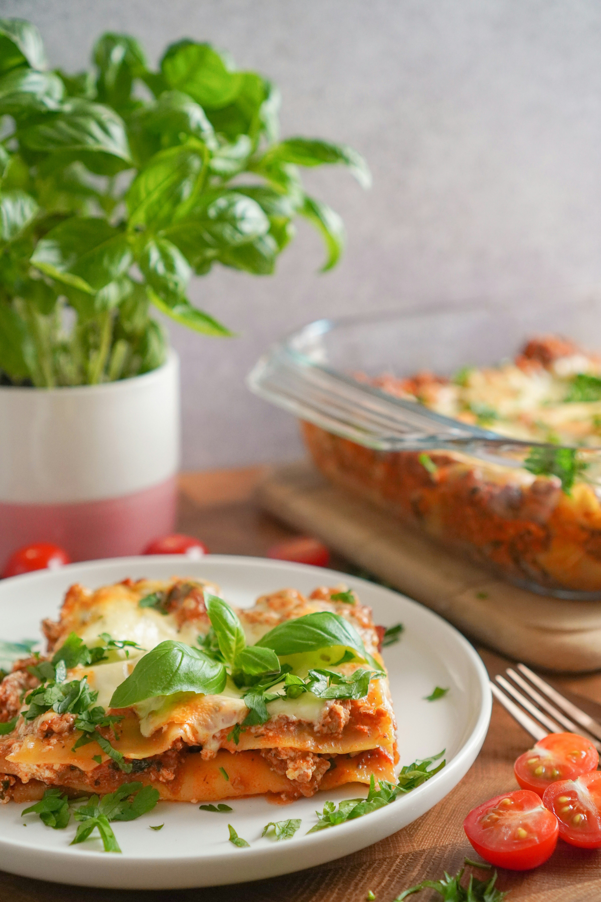

How to make Lasagna

Description
A classic Italian comfort food made with layers of rich meat sauce, creamy béchamel, and melted cheese, baked to golden perfection.
Ingredients
- 250 g lasagna sheets
- 500 g ground beef (or mixed pork/beef)
- 1 onion, chopped
- 2 garlic cloves, minced
- 400 g canned tomatoes (or passata)
- 2 tbsp tomato paste
- 1 tsp dried oregano/basil
- 50 g butter
- 50 g flour
- 500 ml milk
- 150 g grated cheese (mozzarella + parmesan mix works well)
- Olive oil, salt, pepper
Steps
-
Meat sauce: Fry onion + garlic in oil, add meat, cook until browned. Stir in tomato paste, tomatoes, herbs, salt, pepper. Simmer ~15 min.
-
Béchamel sauce: Melt butter, stir in flour, whisk. Slowly add milk, whisk until smooth and thickened. Season with salt, pepper, and a pinch of nutmeg.
-
Assemble: In a baking dish, layer meat sauce → lasagna sheets → béchamel → cheese. Repeat until full. Finish with béchamel + cheese on top.
-
Bake: 180°C (350°F) for 35-40 minutes, until golden and bubbling.
-
Rest 10 minutes before slicing.
Back to Homepage